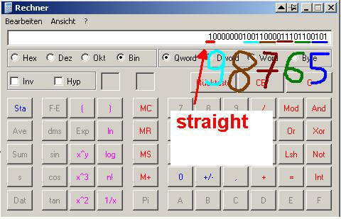

Pokerval explained
OpenHoldem classifies and orders poker hands into a single 32bit value.

Bits 31-24 indicate the hand rank
- Straight flush = bit 31 set
- Four of a kind = bit 30 set
- Full house = bit 29 set
- Flush = bit 28 set
- Straight = bit 27 set
- Three of a kind = bit 26 set
- Two pair = bit 25 set
- One pair = bit 24 set
- 5-of-a-kind is indicated when bits 31-24 are set to 1
- High-card (no pair) is indicated when bits 31-24 are set to 0
Bits 23-20 are not used
- Bits 19-16 indicate the rank of the top card in the hand
- Bits 15-12 indicate the rank of the second card in the hand
- Bits 11-8 indicate the rank of the third card in the hand
- Bits 7-4 indicate the rank of the fourth card in the hand
- Bits 3-0 indicate the rank of the fifth card in the hand
Numeric values for the ranks (bits 19-1) are:
- 14 Ace
- 13 King
- 12 Queen
- 11 Jack
- 10-2 Ten-Two
- 1 Ace (in lo straight)
Pokerval comparisons
The pokerval symbol maps every 0 to 7 card poker hand onto the 32bit number space in correct order of game precedence, allowing two poker hands can be compared to see which is the better hand - higher values are better. The lowest possible value is 0 (no cards).

Now we either apply a binary operation or we feed the pokerval into MicroSofts calculator and then switch to binary mode:

Not that hard to interpret the result.
Player/Pocket Card List
The symbol pcbits is a bit list that indicates where your dealt pocket cards are used in your 5 card poker hand. Ony the lower order 5 bits are significant - one bit per card in your 5 card poker hand. Each bit corresponds to a pokerval rank field as follows:
bit# pokerval bit4 rank5 bit3 rank4 bit2 rank3 bit1 rank2 bit0 rank1.
In the example above pcbits would look like
pcbits = 00110
because we contribute 7 and 6 in a 98765-straight.
If all bits in pcbits are zero then neither of your two cards are used in your 5 card hand. The following formula fragment will be true if you have a sucker straight:
((nstraight==5) && (pcbits==1))
The following formula fragment will be true if you are filling an inside straight:
((nstraight==5) && (pcbits&14))
The formula symbol npcbits contains the number of your pocket cards being used in your 5 card poker hand. The possible values are: 0, 1 and 2.